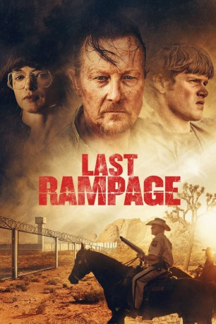

#11201 Last Rampage - Der Ausbruch des Gary Tison
 
 IMDB-Wertung: 5.7 / 10
IMDB-Wertung: 5.7 / 10  Metascore: 50
Metascore: 50 
Die Handlung von „Last Rampage - Der Ausbruch des Gary Tison“ basiert auf wahren Begebenheiten. Im Sommer 1978 bricht der verurteilte Mörder Gary Tison zusammen mit seinem Zellengenossen Randy Greenawalt aus dem Hochsicherheitsgefängnis ADX Florence aus. Mit der Hilfe von Tisons drei jugendlichen Söhnen wollen sie Richtung Mexiko fliehen. Auf ihrem Streifzug durch die Wüste in Richtung Grenze zieht das Quintett eine blutige Spur hinter sich her. Während Sheriff Cooper auf die Jagd nach ihnen geht, verteidigt Tisons Frau Dorothy ihre Familie vehement gegenüber der Presse.
Jahr: 2017
Dauer: 93 Minuten
FSK: 16
Land: USA Studio: Epic Pictures ReleasingTonspuren: DD5.1 - ,
Untertitel: Deutsch,
Auflösung: 1080p (1920x804) Größe: 3543 MB
Genre: Thriller, Drama, Krimi, Mystery
Regisseur: Dwight H. Little
Drehbuch: James W. Clarke, Álvaro Rodríguez, Jason Rosenblatt
Soundtrack: Tobias Enhus, Richard Patrick
Darsteller:
 Robert Patrick als Gary Tison
Robert Patrick als Gary Tison Heather Graham als Dorothy
Heather Graham als Dorothy Bruce Davison als Cooper
Bruce Davison als Cooper Alex MacNicoll als Donnie
Alex MacNicoll als Donnie Molly C. Quinn als Marisa
Molly C. Quinn als Marisa- Casey Thomas Brown als Ray
 Chris Browning als Randy Greenawalt
Chris Browning als Randy Greenawalt Jason James Richter als Brawley
Jason James Richter als Brawley William Shockley als Joe Tison
William Shockley als Joe Tison John Heard als Blackwell
John Heard als Blackwell- Tamara Clatterbuck als Carolyn Simmons
- Deborah Carson als Mary Jo West
- Megan Gallagher als Mrs. Cooper
- Brigitte Hagerman als Margene Judge
 Garrett Hines als John Lyons
Garrett Hines als John Lyons- Kevin Joy als James Judge
- Alex Lombard als Judy Tyson
- Michele Martin als Donna Lyons
- Heath McGough als Man who finds Lyon's bodies
- Michael Monks als Eddy
- Ren Montoro als Terry Jo Tyson
- Chris Muto als Tim Darby
- Randy Perry als Reporter
- Elizabeth Sampson als Diner waitress
- Van White als Dispatch Officer
- Skyy Moore als Ricky
- Cassandra Bautista als Motel Maid
- Sandy Little als Rayette
- Brian Nowak als Gary Tison Dead Body
- Vinny Pavioni als Arizona Law Enforcement Officer
- David M. Roth als
- Craig Tsuyumine als Reporter
Datei: X:\2017(G-M)\Last Rampage - Der Ausbruch des Gary Tison (2017, FSK16, 1920x804).mkv seit 13.05.2019
Festplatte: HD 2017(A-Z)-2018(A-F)
 Es gibt insgesamt 148 Filme in der Gruppe '2017(G-M)'
Es gibt insgesamt 148 Filme in der Gruppe '2017(G-M)'